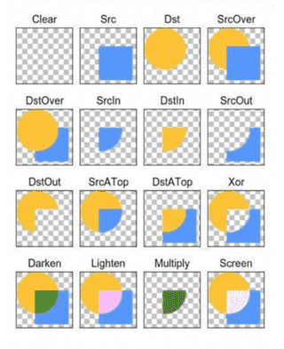

tint属性一个颜色值，可以对图片做颜色渲染，我们可以给view的背景设置tint色值，给ImageView的图片设置tint色值，也可以给任意Drawable或者NinePatchDrawable设置tint色值。
在应用的主题中也可以通过设置 android:tint 来给主题设置统一的颜色渲染。
tint的渲染模式有总共有16种，xml文件中可以使用6种，代码中我们可以设置16种，渲染模式决定了渲染颜色和原图颜色的取舍和合成规则：

PorterDuff.Mode.CLEAR 所绘制不会提交到画布上。PorterDuff.Mode.SRC 显示上层绘制图片PorterDuff.Mode.DST 显示下层绘制图片PorterDuff.Mode.SRC_OVER 正常绘制显示，上下层绘制叠盖。PorterDuff.Mode.DST_OVER 上下层都显示。下层居上显示。PorterDuff.Mode.SRC_IN 取两层绘制交集。显示上层。PorterDuff.Mode.DST_IN 取两层绘制交集。显示下层。PorterDuff.Mode.SRC_OUT 取上层绘制非交集部分。PorterDuff.Mode.DST_OUT 取下层绘制非交集部分。PorterDuff.Mode.SRC_ATOP 取下层非交集部分与上层交集部分PorterDuff.Mode.DST_ATOP 取上层非交集部分与下层交集部分PorterDuff.Mode.XOR 取两层绘制非交集。两层绘制非交集。PorterDuff.Mode.DARKEN 上下层都显示。变暗PorterDuff.Mode.LIGHTEN 上下层都显示。变亮PorterDuff.Mode.MULTIPLY 取两层绘制交集PorterDuff.Mode.SCREEN 上下层都显示。通过tint色处理的图片会原图显示出不一样的颜色，我们可以通过这种方式利用一张图片做出图片选择器的效果，让控件在按压状态下显示另外一种颜色:
通过给图片设置tint色生成另外一种图片
<bitmap xmlns:android="http://schemas.android.com/apk/res/android"
android:src="@drawable/ring"
android:tintMode="multiply"
android:tint="#5677fc" />
利用新的图片生成图片选择器
<selector xmlns:android="http://schemas.android.com/apk/res/android">
<item android:drawable="@drawable/tint_bitmap" android:state_pressed="true"/>
<item android:drawable="@drawable/ring" />
</selector>
Palette调色板，可以很方便的让我们从图片中提取颜色。并且可以指定提取某种类型的颜色。
Vibrant 鲜艳的Vibrant dark鲜艳的暗色Vibrant light鲜艳的亮色Muted 柔和的Muted dark柔和的暗色Muted light柔和的亮色对图片取色是一个比较消耗性能的操作，其内部会对图片的像素值进来遍历以分析对比，所以我们要在异步线程中去完成。
如果操作本来就属于后台线程，可以使用：
Palette p = Palette.generate(Bitmap bitmap);
如果在主线程中，我们可以使用异步的方式：
Palette.generateAsync(bitmap, new Palette.PaletteAsyncListener() {
public void onGenerated(Palette palette) { }
});
当操作完成后或者异步回调后，我们就可以使用以下方式来获取对应的色值了，并且可以在没有获取到的情况下之指定默认值：
p.getVibrantColor(int defaultColor);
p.getDarkVibrantColor(int defaultColor);
p.getLightVibrantColor(int defaultColor);
p.getMutedColor(int defaultColor);
p.getDarkMutedColor(int defaultColor);
p.getLightMutedColor(int defaultColor);
在使用palette之前，bitmap提供获取指定位置的像素值：
bitmap.getPixel(x,y)
但是该方式只能获取某一点的像素值，palette是对整个bitmap的所有像素值进行分析，并选出几个像素占比比较多的像素值，这样选择出来的色值更符合图片的整体色值。
矢量图也称为面向对象的图像或绘图图像，是计算机图形学中用点、直线或者多边形等基于数学方程的几何图元表示图像。矢量图形最大的优点是无论放大、缩小或旋转等不会失真；最大的缺点是难以表现色彩层次丰富的逼真图像效果。
Android L开始支持矢量图，我们可以用它来处理一些图形简单的icon，方便我们的适配。
Android L中对矢量图的支持是通过xml文件构建，通过矢量图的path描述来生成一个矢量图，对应的java对象为VectorDrawable。
下面是官方文档提供的一个矢量图，利用改文件，我们可以创建一个随意放大缩小都不会失真的心形
<vector xmlns:android="http://schemas.android.com/apk/res/android"
android:height="300dp"
android:width="300dp"
android:viewportHeight="40"
android:viewportWidth="40">
<path android:fillColor="#ff00ff"
android:pathData="M20.5,9.5
c-1.955,0,-3.83,1.268,-4.5,3
c-0.67,-1.732,-2.547,-3,-4.5,-3
C8.957,9.5,7,11.432,7,14
c0,3.53,3.793,6.257,9,11.5
c5.207,-5.242,9,-7.97,9,-11.5
C25,11.432,23.043,9.5,20.5,9.5z"/>
</vector>
矢量图的pathData数据就是用来描述矢量图的数学公式，其含义如下表：
| 命令类型 | 使用描述 | 代表含义 | 举例说明 |
|---|---|---|---|
| 移动指令 | M x,y | M移动绝对位置 | M 100,240 |
| 移动指令 | m x,y | m移动相对于上一个点 | m 100,240 |
| 绘制指令 | L 或 l | 从当前点绘制直线到指定点 | L 100,100 |
| 绘制指令 | H 或 h | 水平直线 | h 100 |
| 绘制指令 | V 或 v | 垂直直线 | v 100 |
| 绘制指令 | C 或 c | 三次方程式贝塞尔曲线 | C 100,200 200,400 300,200 |
| 绘制指令 | Q 或 q | 二次方程式贝塞尔曲线 | Q 100,200 300,200 |
| 绘制指令 | S 或 s | 平滑三次方程式贝塞尔曲线 | S 100,200 200,400 300,200 |
| 绘制指令 | T 或 t | 平滑二次方程式贝塞尔曲线 | T 100,200 300,200 |
| 绘制指令 | A 或 a | 椭圆 | A 5,5 0 0 1 10,10 |
| 关闭指令 | Z 或 z | 将图形的首、尾点用直线连接 | Z |
| 填充规则 | F0 | EvenOdd 填充规则 | |
| 填充规则 | F1 | Nonzero 填充规则 |
通过path命令来进行简单的图形还是可行的，但是复杂的图形我们就需要借助工具来生成了，比如使用 Expression Design，就可以直接粘贴来自其它软件的矢量图形，然后选择导出，导出时做如后选择：文件->导出->导出属性->格式->XAML Silverlight 画布，即可得到XAML格式的矢量图形，也就是Path。
更多矢量图学习可参考：http://www.w3.org/TR/SVG11/paths.html#PathData 我们可以访问http://editor.method.ac在线制作矢量图并导出path